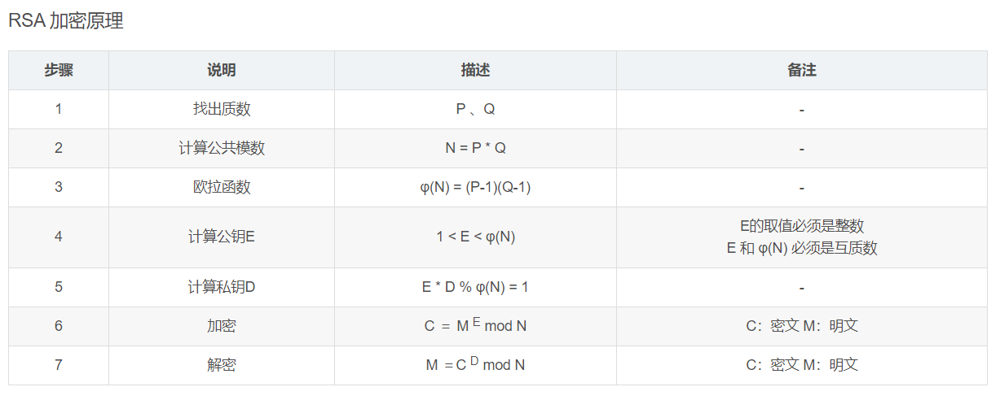

Crypto：密码学¶
数学、密码学，以及脑洞¶
Crypto¶
Encrypt（加密） & Decrypt（解密）
-
古典密码
-
对称加密（流密码/块加密）
-
非对称加密
-
其它
古典密码¶
-
前置知识：
-
几大类古典密码：
-
入门级：凯撒密码(cyberpeace)
- 通过单纯的移位来完成加解密:
oknqdbqmoq{kag_tmhq_xqmdzqp_omqemd_qzodkbfuaz} -
入门级：栅栏密码(cyberpeace)
- 通过特殊规则来完成加解密：
ccehgyaefnpeoobe{lcirg}epriec_ora_g- 注意，这个谜面的栅栏加密方式加了点小佐料~
对称加密：加解密同密钥¶
流加密¶
- 明文流与密钥流长度相等
块密钥¶
- 一个分组密钥可以加密多块数据

非对称加密：加解密不同密钥¶
-
前置知识一：
-
非对称加密相对于对称加密的一个最大的不同在于：它的加密和解密所使用的密钥是不同的，用来加密的密钥不能用来解密，用来解密的密钥也无法用来加密。
-
当前比较常见的两种非对称加密：
-
RSA（基于两个大素数积的分解困难性）
-
ECC（基于椭圆曲线上的有理点构成Abel加法群上椭圆离散对数的计算困难性）
-
- 前置知识二：

-
入门级：RSA 求乘法逆元
-
住你上铺的兄弟突然声称他掌握了某项黑科技，并向你发送了一个压缩包，这看起来十分可疑！
-
首先，打开这个压缩包；
-
解压出来一个无后缀文件名，是不是还要再解压一次？；
-
查看内部文件，发现除了加密文本之外，还有个
gy.key，这时候就需要用到OpenSSL工具来读取其中的公钥信息； -
通过解码获得了 n 和 e ，先试试 N 能不能分解成 p 和 q ？
-
居然可以！现在我们有了 p q n e ，还能从它们解出 φ(n)，回忆一下前置知识2-7，这时候就可以尝试解 e 的乘法逆元 d 了。
-
入门级：RSA 求最大公约数
-
题目开门见山，明明白白告诉我们，要求
最大公约数，看来这是核心，打开文件，果然有两个 n 等着我们； -
python为我们提供了相当便捷的工具库（当然如果你想自己实现一遍算法也是完全ok的），我们可以通过工具来算出它们的
最大公约数，由于p和q都是大素数，则这个公约数必定就是p*q中的一个； -
有了这个
p，我们就可以通过这个p推出每个n对应的另一个乘数q，现在我们又再次拿到了n p q e，对d求解就顺理成章了。 -
拿到私钥，由前置知识2-7，我们就可以解出对应的明文了。
# 其它类型
## 推理类型
## 编解码类型
-
与上节课中
MISC分类有部分重合，本质上都是考验我们对编码类型的敏感程度：
-
看到结尾有
=，第一反应：Base64！ -
Base64 解码之后，看到这串字符串，怎么看都感觉还是 Base64，再解一遍！
-
解完发现是一串 数字 + 斜线 ，数字还都是 ASCII 码表上
字母区间里的，直接对照 ASCII 码表破译即可。
隐写类型¶
- 与上节课中
MISC分类有部分重合，内容基本一致，此处不再展开讲解。
参考链接¶
本期作业¶
平台：xctf
- MD5 【易】
本题非常简单，题目大意为给定一个 md5 值，然后找出明文， md5 爆破即可。
-
easy_RSA【易】
-
Normal_RSA【易】
-
幂数加密【易】
-
fanfie【难】
混合加密+仿射密码
- easy_ECC【难】
需要编码，考察对椭圆加密公钥算法的理解，需要对 ECC算法具有一定的了解，然后编程实现。